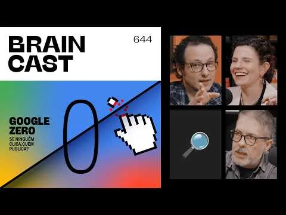

No Braincast 644, Carlos Merigo, Cris Dias e Helena Galante discutem o Google Zero, os AI Overviews e o impacto da busca por IA sobre publishers. O episódio analisa como o Google passou de organizador que enviava tráfego para sites a intermediário que resume respostas, reduz cliques e tensiona o modelo econômico de quem produz conteúdo. A conversa também questiona a dependência histórica de SEO, pageviews e plataformas que mudam regras unilateralmente.
Acessar fonte original ↗